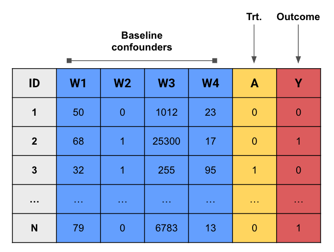
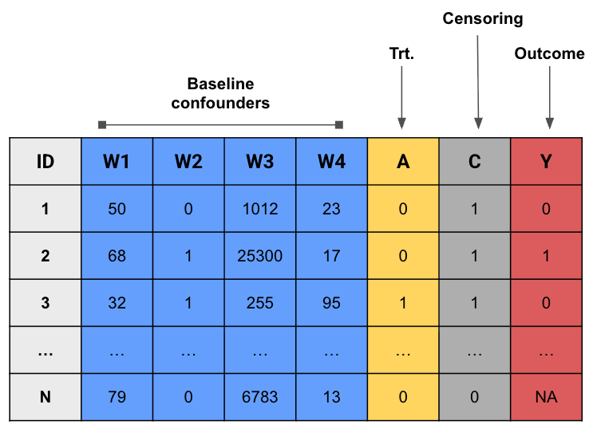
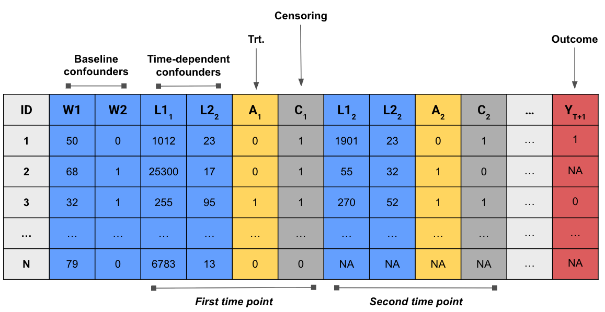
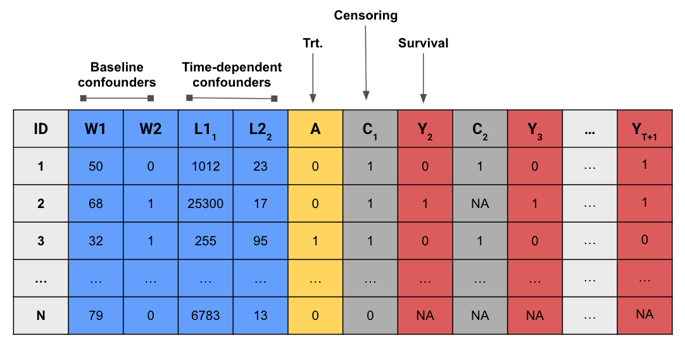
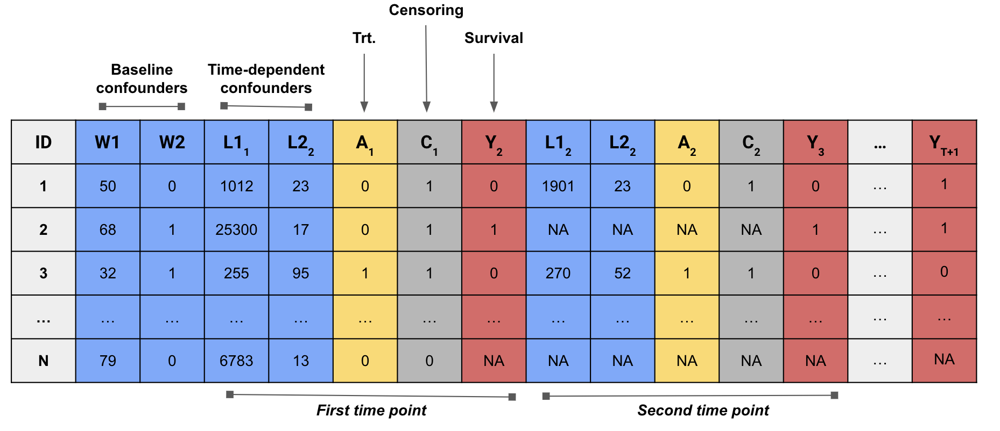

lmtp 包
The lmtp package · Beyond the ATE 工作坊中译
来源：Nick Williams、Kara Rudolph、Iván Díaz，Beyond the ATE · The lmtp package （GitHub 仓库），GPL-3.0 许可。 本页为中文翻译，非原文；按 GPL-3.0 保留原作者署名与许可证，并标明这是修改（翻译）后的版本。 代码块在本站不重新执行；插图直接引用原文件。
到目前为止，我们已经：
为一般化的假设干预定义了因果估计量；
从观测数据中识别了该估计量；
讨论了 4 种不同的估计量。
现在该把这些新知识用到真实数据的例子上了。
现有软件与 lmtp
用于纵向研究中因果效应估计的通用软件相当有限：
ipw和gfoRmula包分别提供了用逆概率加权（IPW）和参数化 g-formula 估计因果 效应的例程。不过正如前面讨论过的，这些方法的有效性要求作出不切实际的参数假设。ltmle和survtmle包实现了从纵向数据估计因果效应的双稳健方法， 但这些包不支持连续值暴露、多重暴露、依赖于暴露自然取值的干预，也不支持随机干预。
相比之下，lmtp 包（Dı́az 等 (2023) 一文的配套软件）可以对我们今天讨论的 这一整类一般化干预，在时点效应和纵向效应两种情形下做双稳健且灵活的估计。
- lmtp 可以成为你在 R 中做因果分析的默认工具包！
安装
在本工作坊中，lmtp 已经随 webr 装好了。不过你也可以从 CRAN 把它装到本机：
install.packages("lmtp")或者从 GitHub 下载开发版：
# install.packages(devtools)
devtools::install_github("nt-williams/lmtp@devel")预备知识
在开始使用 lmtp 之前，先交代一些对所有示例都适用的通用信息：
数据通过
data参数传给估计量。数据应为宽格式（wide format），研究中每个时点的每个变量各占一列 （也就是说，\(O\) 中的每个变量都应有一列）。数据可以是
data.frame或tibble， 但不能是data.table。列不必按任何特定顺序排列，数据中也可以包含估计时用不到的变量。
处理变量的名称用
trt参数指定。删失变量的名称用
cens参数指定。基线协变量的名称用
baseline参数指定。时变协变量的名称用
time_vary参数指定。trt参数接受字符向量，或由字符向量构成的 list。cens和baseline参数接受字符向量。time_vary参数接受由字符向量构成的 list。
向量（vector）和列表（list）是 R 中的基本数据结构。向量可以理解为一维的同类型元素 集合，例如字符向量就是一组类别为 character 的值。
a_character_vector <- c("this", "is", "a", "character", "vector")列表与之类似，区别在于它可以容纳不同类型的元素。
a_list <- list(
a_character_vector = c("this", "is", "a", "character", "vector"),
a_numeric_vector = 1:10,
a_list_whithin_a_list = list(1, 2, 3, 4)
)trt、cens和time_vary参数必须按模型的时间顺序排列，每个位置放该时点对应 变量的名称（可以是多个名称）。结局变量用
outcome参数指定。outcome_type参数指定结局的类型：连续结局设为"continuous"， 二分类结局设为"binomial"，事件发生时间结局设为"survival"。删失指示变量应编码为 0 和 1，其中 1 表示该观测在下一时点仍被观测到， 0 表示失访。一旦某观测的删失状态变为 0，就不能再变回 1。 观测被删失之前不允许存在缺失数据。
outcome_type参数对连续结局应设为"continuous"，二分类结局设为"binomial"， 事件发生时间结局设为"survival"。
数据结构示例
时点处理

带删失的时点处理

带删失的时变处理

生存结局的时点处理

生存结局的时变处理

机器学习集成
前面已经讨论过，多重稳健估计量有一个很吸引人的性质：它们可以在保持 \(\sqrt{n}\)-相合的 同时，引入灵活的机器学习算法来估计冗余参数。
lmtp 用超级学习器（super learner）算法来估计这些冗余参数。
超级学习器算法是一种集成学习器：它基于交叉验证，把一组候选模型按加权凸组合的方式 整合起来。渐近地看，这个被称为元学习器（meta-learner）的加权组合， 会优于其中任何单个组成模型。
lmtp 使用
SuperLearner包提供的超级学习器实现。超级学习器中使用的算法，用
learners_trt和learners_outcome参数指定。选择
learners_outcome的候选学习器时，应以结局变量的类型为依据。无论暴露是连续、二分类还是分类变量，暴露机制都是用分类方法估计的。 因此，
learners_trt只应纳入能做二分类的候选学习器。若候选学习器依赖交叉验证来调超参数，且要用于
learners_trt， 那它应当支持分组数据。因为处理机制的估计依赖于增广后的 \(2n\) 重复数据集， 重复出来的观测必须在样本分割时落入同一折。这一点由包自动完成。